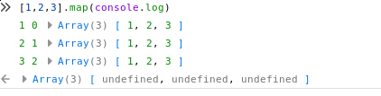

Javascript中神奇的map
从 https://medium.com/dailyjs/parseint-mystery-7c4368ef7b21 看到的，觉得大开眼界，有必要记录一下。
在JavaScript中运行
['1','7','11'].map(parseInt)
得到的结果居然会是
[1, NaN, 3]
这个结果真是让人目瞪口呆，产生这个结果的原因主要在于JavaScript的 map 函数事实上是对 parseInt 传递了三个参数而不是一个:数组元素、元素对应的索引、以及完整的数组
比如:
[1,2,3,4,5].map(console.log)
的结果为 
而 parseInt 实际上能接受两个参数:一个字符串和一个基数,其中基数参数如果为false，则使用默认值，10进制。
因此
['1','7','11'].map(parseInt)
实际上执行的是
parseInt('1', 0,['1','7','11']) parseInt('7', 1,['1','7','11']) parseInt('11',2,['1','7','11'])
这里又涉及到另一个JavaScript的特性: 无论函数定义了多少形参，JS允许使用任意数量的实参进行调用, 不够的参数用 undefined 补充，多余的参数被省略。
function foo(x, y) { console.log(x); console.log(y); } foo(1, 2); // logs 1, 2 foo(1); // logs 1, undefined foo(1, 2, 3); // logs 1, 2
因此
parseInt('1', 0,['1','7','11']) parseInt('7', 1,['1','7','11']) parseInt('11',2,['1','7','11'])
等价于执行
parseInt('1', 0) parseInt('7', 1) parseInt('11',2)
而在JS中 0 是 false,因此基数参数使用了默认值 10,也就是
parseInt('1', 0)
等价于
parseInt('1', 10)
综上所述，
- '1'的在10进制中表示1
- '7'在1进制中是个无效数字，也就是
NaN - '11'在2进制中表示3
最终结果为 [1,NaN,3]